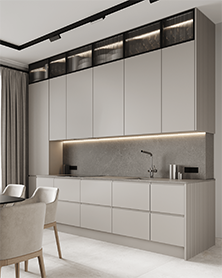

← Назад к работам
Кухня Modern White

Характеристики проекта
Размер помещения: 3.8 × 2.9 м
Корпус: ЛДСП UltraDecor Дуб Вотан
Фасады: AGT White Gloss
Столешница: Белый мрамор
Фурнитура: GTV
Стоимость: от 18 500 сомони